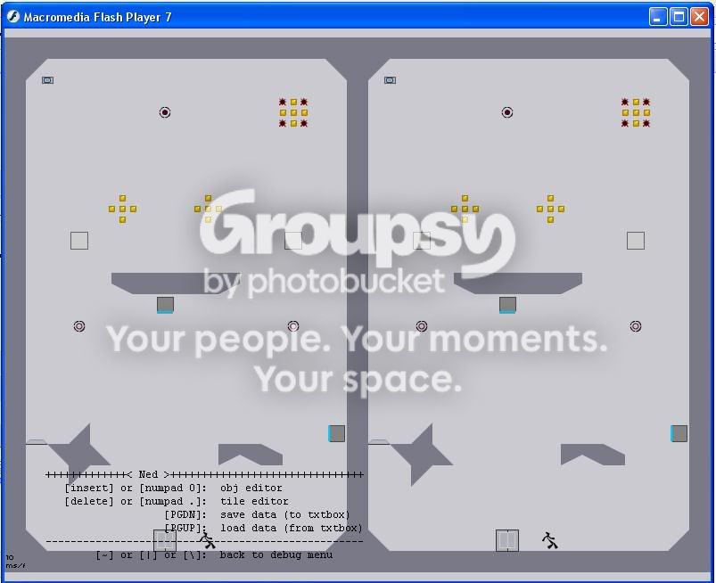

#4800 1 2005-10-17T23:29:10Z Dongolov Could some people make some maps that look like these. Some of them would be pretty cool. It's from a similar type game so the levels should turn out.
http://www.moposite.com/stuff_media_visual.php#109021 3 2005-10-17T23:38:24Z Dongolov Why yes it is. I really think #20 would be good.
#5509 1 2005-12-03T00:41:47Z Dongolov Check it out here.
http://numa.notdot.net/map/20322
The demo is at the bottom of the page.
#119921 4 2005-12-03T00:46:07Z Dongolov It can be deleted if needed.
#5534 1 2005-12-04T04:12:41Z Dongolov Whenever I press J or T to edit all it does is loads nothing, then shows me the edit home page fast. That repeats forever.
Wuz Wrong?
#120395 3 2005-12-04T17:33:28Z Dongolov I know that. But it won't let me go into edit mode at all.
#5677 1 2005-12-14T23:21:53Z Dongolov Ummmmmmmmm....He took over episode 0.

Yeah.....
#123019 6 2005-12-15T00:12:44Z Dongolov Nah that wasn't it. I rebooted my comp and now it works fine. Thanks for the input though.
#127842 21 2005-12-29T05:16:00Z Dongolov WOW. All I managed was for the rocket to hit the crack in the tiles, but not go through.
How do you get replay data from your last run? (more explainified version of my last question.)
EDIT:
YAHHHHH!!!!!!!! I got it too, but I freaked out and it went down and smashed! This is verification that IT IS POSSIBLE!
What the hell does "explainified" mean?
#128989 15 2006-01-01T07:34:55Z Dongolov Geez. Why don't people like 24-4. That is my favorite Meta level. Sometimes I just play it as a survival and jump around the pot.
#129332 11 2006-01-02T21:56:50Z Dongolov Beaten in four months for me.
#130699 62 2006-01-08T05:21:08Z Dongolov WOOOOOOOOOOOOOOOOO! I've taken the lead of the non ridiculous players on this map! We'll see how long this lasts...This is my highest score yet.

#130714 25 2006-01-08T06:00:09Z Dongolov Splitscreen would be awesome too.
Example:

#130716 64 2006-01-08T06:03:48Z Dongolov Yep. I screwed up making my account named Dongolov so I had to think of a new one. Needless to say I'm not very creative.
Edit: Cool I'm Dongolov again. Thanks LittleViking!
#130956 28 2006-01-09T02:05:44Z Dongolov It would be ok for me in multiplayer if the rocket, gausses, chainguns, and lazers only went after the first ninja they saw. This could be used strategically. If both ninjas are in the path of the enemy the enemy would still attack the first ninja it saw until that ninja hides. All the other enemys would act normal.
Bounceblocks would be crazy though, I don't think they would work. Two ninjas on one bounceblock, think about that.
#132528 5 2006-01-15T03:21:04Z Dongolov With objects when you are editing them you can press the "enter debug mode key" under you backspace and click. That deletes the previous object made. You might have to click a few times before it works. Nothing about tiles though.
#132530 6 2006-01-15T03:27:26Z Dongolov Still there would be two of every enemy which would get annoying.
#132741 467 2006-01-15T22:58:36Z Dongolov I think that when "The Epic" hits fifty levels it should get its own column complete with story in the next version of N. Maybe as an unlockable or just an amazingly hard column.
#6326 1 2006-01-20T23:39:38Z Dongolov I've been workin on this level for a while and I've devised a new route including a triple jump. The entire run is pretty sloppy so I want to clean it up. I am kind of annoyed that I knda freaked out on the way back and slowed down. I 'd probably be in third if I hadn't done that. The hardest part about the route is the transition from stopping yourself to getting the last gold piece. Do you think that if I cleaned up that route enough it would beat spects time?
Edit: This post might be bad for me because it might drive people to get that 0th.

#134537 5 2006-01-22T03:20:43Z Dongolov I've got 1.2 if you want.
#134831 6 2006-01-22T23:27:19Z Dongolov I improved my run by a lot by getting the last piece of gold on the fall. It left me with more speed to go up the chamber. Back in the number four spot for me.
#134844 3 2006-01-23T00:02:31Z Dongolov You bought it? With cash?
#135347 9 2006-01-24T03:36:15Z Dongolov My opinion is that some of these guys know they are bad. They probably wouldn't mind seeing their name. Some people just like to see their names made public and that makes them happy. Although I could be horribly wrong...
#135348 4 2006-01-24T03:44:15Z Dongolov I don't really understand. Could explain more in detail?
#137330 943 2006-01-30T01:16:08Z Dongolov Played and Rated a 4.
Need ratings on "The Red Nine"
http://numa.notdot.net/map/27063#143725 1085 2006-02-14T23:08:34Z Dongolov Played and rated "Left with Nothing" a 4.5. Its a very creative map but its lacking somewhere I do not know. Not lacking too much though.
Need Rated:
http://numa.notdot.net/map/29457
Your The Man Now Dog.
EDIT: You're